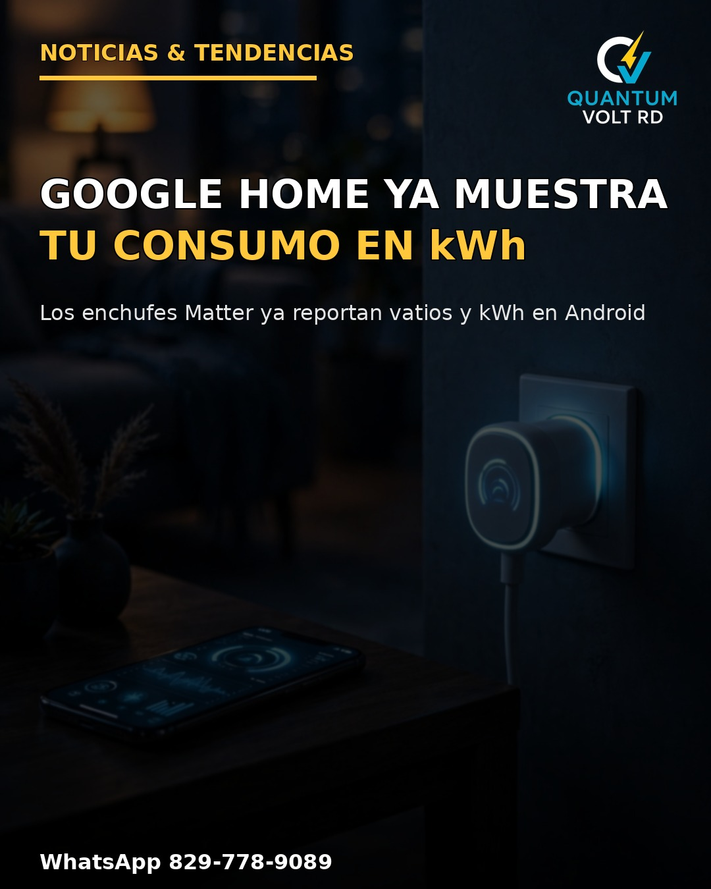

Noticia · 26 de noviembre de 2026
Google Home ya muestra tu consumo en kWh
26 de noviembre de 2026 · Domótica · Eficiencia energética

Desde la actualización del 29 de octubre de 2026, la app Google Home en Android muestra la potencia en tiempo real y la energía total consumida (kWh) de los enchufes inteligentes Matter compatibles y de los monitores de energía que miden consumo acumulado, directo en la tarjeta del dispositivo y en su pantalla de control.
Antes de esto, un enchufe con medición emparejado por Matter en Google Home solo funcionaba como interruptor remoto: encender y apagar. Sus lecturas quedaban escondidas en la app del fabricante, o había que irse a SmartThings o a Home Assistant para verlas.
Solo Android por ahora
La función llegó solo a Android por ahora; Google no da fecha para iOS. El despliegue es gradual: aunque se tenga la última versión de la app, la función puede tardar en aparecer.
El enchufe debe reportar un total acumulado por Matter (medición de potencia y energía de Matter 1.3). El firmware decide: por ejemplo, el SONOFF S61S necesita firmware 1.0.6 o superior; las versiones viejas solo mandan potencia en vivo, sin el total. Los enchufes agregados a Google Home vinculando la cuenta del fabricante (no por código Matter) no están cubiertos por la nota.
Solo dos cifras, sin historial ni automatizaciones
El alcance es limitado: solo dos cifras, la potencia actual y el total usado. No hay historial diario ni mensual, ni estimación de costo, ni activadores de automatización basados en potencia o energía. Para eso, Home Assistant sigue siendo la opción más completa: lee los clústeres como sensores, grafica el consumo y automatiza con esos datos.
La misma actualización corrige los iconos y controles de los cierres Matter (puertas de garaje, cancelas, ventanas, persianas) y añade un atajo de ahorro de energía de un toque para termostatos.
Qué significa para tu casa
El enchufe que ya tienes en casa ahora te dice cuánto gasta, sin comprar nada nuevo: ves en la misma pantalla cuánto consume la nevera, el aire o el calentador, y puedes cazar al culpable de la factura alta sin abrir otra app. Y en Quantum Volt RD instalamos tu hogar inteligente con enchufes y medidores que sí te dejan ver y controlar cada vatio, para que el consumo vampiro no se coma tu factura.
Cotiza tu hogar inteligente por WhatsApp: 829-778-9089Fuentes
- Matterhome.io, 29 de octubre de 2026: Google Home en Android ya muestra la potencia en vivo y los kWh de los enchufes Matter
- Notas de lanzamiento oficiales de Google Home, 29 de octubre de 2026 (support.google.com), vía 9to5Google
← Volver a la página principal de Quantum Volt RD · Ver todas las noticias →